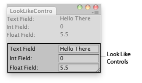

EditorGUIUtility.LookLikeControls
Obsolete public static void LookLikeControls(float _labelWidth,
float _fieldWidth);
Parameters
| labelWidth | Width to use for prefixed labels. | |
| fieldWidth | Width of text entries. |
Description 描述
Make all EditorGUI look like regular controls.
This will make the default styles used by EditorGUI look like controls (e.g. EditorGUI.Popup becomes a full popup menu).

Editor window with "LookLikeControls" look.
using UnityEngine; using UnityEditor;
// Simple editor window that shows the difference between // Look like controls and look like inspector
class LookLikeControlsInspector : EditorWindow { int integer1 = 0; float float1 = 5.5f;
[MenuItem("Examples/Look Like Controls - Inspector")] static void Init() { var window = GetWindow<LookLikeControlsInspector>(); window.Show(); }
void OnGUI() { EditorGUIUtility.LookLikeInspector(); EditorGUILayout.TextField("Text Field:", "Hello There"); EditorGUILayout.IntField("Int Field:", integer1); EditorGUILayout.FloatField("Float Field:", float1); EditorGUILayout.Space(); EditorGUIUtility.LookLikeControls(); EditorGUILayout.TextField("Text Field", "Hello There"); EditorGUILayout.IntField("Int Field:", integer1); EditorGUILayout.FloatField("Float Field:", float1); } }